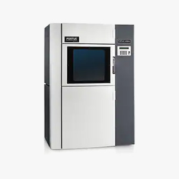
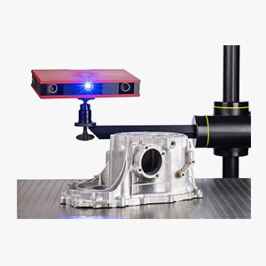

資訊工程類

HTML
此網頁是我實作HTML的成果，身為一個新手，透過實作HTML原始架構讓我能確實打好網站的基礎。

CSS
雖然此網頁非使用常見的框架建立，但透過手刻CSS的過程，學會了許多切版技巧，釐清許多細節，讓我對網頁的呈現有了很多想法。

JavaScript
這是我在建構網頁最有興趣的部分，透過邏輯思維建構一個可以執行的程式讓人擁有成就感，也請參考我的作品裡的javascript原始碼。

jQuery
已掌握jQuery選取器、動態效果、控制DOM、式樣套用與事件處理等用法，也接觸過其相關套件。

Java
Java是我第一個學習的程式語言，理解物件導向帶來的開發優點，目前能夠使用JavaSwing來撰寫桌面的小程式。

SQL
已學習過指令語法，能夠進行資料庫與資料表的建立與查詢，也理解資料表正規化的邏輯與目的。
造型設計類
Alias
造型設計軟體，作為繪製造型曲面為主的3D模型layout工具，目前主要用來繪製座椅的外觀設計，也請參考我的產品設計作品。

KeyShot
用來渲染產品的CG圖，將產品的3D繪圖做擬真材質的外觀表現，讓客戶在產品開發期間就能對實際產品的形式與功能有更明確的理解。
產品工程類
NX
3D工程繪圖軟體，用於設計開模用的零件部品，目前主要用於座椅的泡棉與塑膠件的工程設計。

3D列印
進行產品研發的零件打樣時，負責操作與維護FDM(熔融沉積)技術的3D列印機，並對模型的外觀進行加工處理。

逆向工程
主要分為逆向建模與物品檢測，負責操作掃描設備，處理掃描後的網格檔案，並進行逆向建模以及檢測與原始設計的差異。
電子化打樣
座椅的表皮材打樣要與座椅泡棉完美的合貼，透過3D模型模擬表皮材在展平後的平面樣板，並進行樣板的後處理與透過電子化方式管理樣板。
平面設計類

PhotoShop
照片編輯與平面繪圖之用，熟悉影像的調整與去背，並可進行產品的概念繪圖。

Illustrator
向量檔設計軟體，用於印刷品的版面設計與編排，並可製作向量形式的圖案。